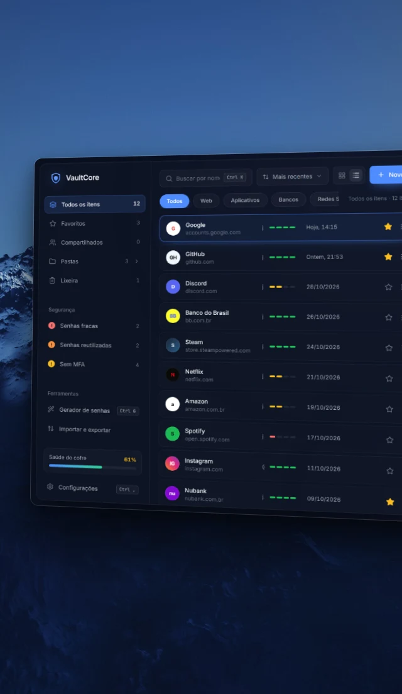

#Rust- Plataforma
- Windows
- Versão
- 0.1.1
- Publicado em
- Setembro de 2026
- Feito com
- Rust, Tauri, React, TypeScript, Tailwind CSS
- Código
- Privado
O que ele resolve
Muitos gerenciadores de senhas pedem uma conta e guardam o cofre em um servidor. O VaultCore faz o contrário: o cofre é um arquivo cifrado no seu computador, aberto por uma senha mestra.
Não existe recuperação da senha mestra, e isso é proposital: o app não guarda nenhuma cópia nem hash dela.
Telas
Telas com dados de exemplo.
Como funciona
-
Cofre em três colunas
Pastas e alertas de segurança à esquerda, lista no centro e detalhes do item à direita, com um indicador da saúde do cofre.
-
Feito para o teclado
Buscar, criar, gerar senha e bloquear têm atalhos. A lista anda pelas setas enquanto você digita, e Enter copia a senha.
-
Importação e backup
Importa senhas exportadas do navegador em CSV e gera backups cifrados com a senha mestra.
Decisões técnicas
-
Chave derivada com Argon2id
A senha mestra passa pelo Argon2id com 64 MiB de memória, o que encarece ataques de força bruta. O salt é aleatório, com 16 bytes.
-
Cifragem com AES-256-GCM
Cada gravação usa um nonce novo de 96 bits. O cabeçalho do arquivo entra como dado autenticado, então uma alteração nele é detectada.
-
Nenhum hash da senha
O app sabe que a senha está certa porque a autenticação do GCM passa ao abrir o cofre. Não há hash guardado para atacar.
-
Interface sem senhas
A lista e os detalhes não recebem as senhas. A interface só busca uma senha quando a pessoa pede para revelar ou editar.
-
Memória e área de transferência
A chave e as senhas ficam em tipos que zeram a memória ao serem descartados. A cópia é feita pelo Rust e fica fora do histórico e da nuvem do Windows.
-
Gravação segura e testes
O arquivo é gravado de forma atômica, com uma cópia de segurança. A cada envio, o GitHub Actions compila o frontend e roda os testes em Rust.
Próximos passos
- Desbloqueio com Windows Hello
- Compartilhamento de itens e vários cofres
- Códigos 2FA e verificação de senhas vazadas